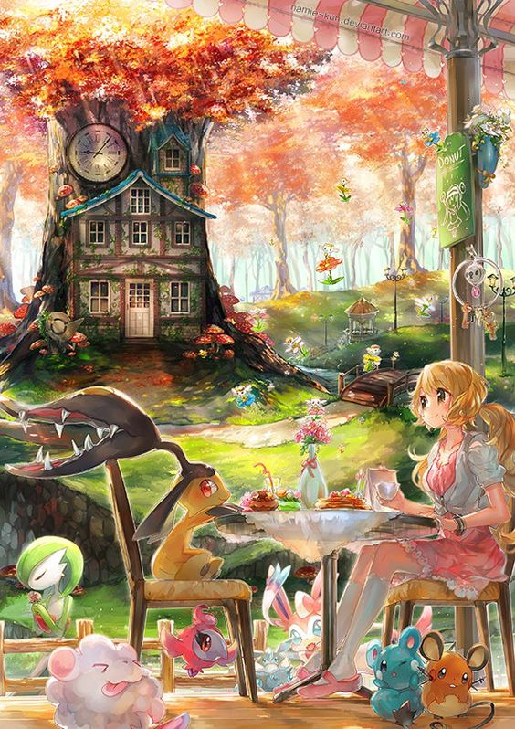
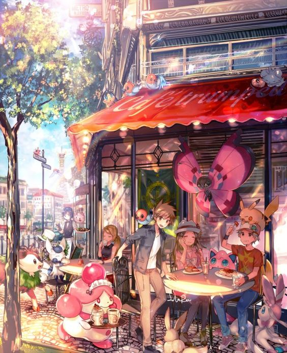

Die Hauptspiele des Pokémonuniversums sind Rollenspiele, die in einem bestimmten Schema erscheinen. Erst werden jeweils zwei zusammengehörige Editionen veröffentlicht, die sich hauptsächlich in einigen der zu fangenden Pokémon unterscheiden. Dies soll die vom Erfinder vorgesehene zwischenspielerische Aktion fördern, sodass man über die betreffende Link-Schnittstelle nicht nur Kämpfe führen kann, sondern Pokémon tauschen muss, um alle zu besitzen. Eine ökonomische Absicht ist dabei aber auch zu vermuten, wie auch beim nächsten Schritt. Die beiden Editionen werden zusammen in einem neuen, sich nicht groß unterscheidenden Rollenspiel aufbereitet, das einige Zeit später erscheint. (Ausnahmen bilden die Hauptspiele der fünften, sechsten und siebten Spielgeneration.)
Pokémon-Rollenspiel

Spielwelt
In Pokémon-Rollenspielen liegt die Spielwelt auf einer zusammenhängenden Weltkarte. Diese beinhaltet Städte und durchnummerierte Routen, die diese Städte miteinander verbinden. Weiterhin gibt es spezielle Orte, die nicht direkt in die Weltkarte eingebunden sind; man muss sie über einen oder mehrere Eingänge betreten und verlassen. Diese Orte sind häufig Höhlen oder bestimmte Gebäude (z. B. das Elektrizitätswerk oder die Pokémon-Villa auf der Zinnoberinsel). Spezielle Orte sind auf der Weltkarte des Spiels eingezeichnet und müssen oftmals durchquert werden, um von einer Stadt in die nächste zu gelangen, wie beispielsweise der Felstunnel, der Azuria City mit Lavandia verbindet. Es gibt aber auch Orte die nur bei Events betretbar sind.
Sammeln von Pokemon
Der Spieler vervollständigt seine Pokémon-Sammlung primär, indem er wilde Pokémon fängt. Diese greifen an, wenn sich der Spieler auf den Routen im hohen Gras bewegt; auch auf dem Wasser, in Höhlen und speziellen Gebäuden treten sie auf. Manche Pokémon sind nur auf bestimmten Routen und/oder an bestimmten Orten aufzufinden. Ab den Versionen Gold und Silber, die einen einprogrammierten Tag-und-Nacht-Wechsel haben, kommt es zusätzlich auf die Tageszeit an, welche Pokémon der Spieler finden kann. Neben dem Fangen von Pokémon gibt es in jedem Spiel einige Personen, bei denen Pokémon getauscht werden können. Für ein bestimmtes Pokémon erhält man im Tausch ein anderes, oftmals seltenes Pokémon. Da man jedes Pokémon nur einmal besessen haben muss, damit es vom Pokédex registriert wurde, kann man ein Pokémon weggeben, ohne es danach noch einmal einfangen zu müssen, um das Spiel zu vervollständigen. Der Großteil aller Pokémon entwickelt sich weiter. Meistens geschieht dies, wenn man sie bis auf ein bestimmtes Level trainiert. Pokémon höherer Entwicklungsstufen trifft man seltener oder gar nicht an, weshalb man sie meistens einfacher durch Trainieren der eigenen Pokémon erhält. Manche Pokémon benötigen zu ihrer Entwicklung spezielle Items. Andere wiederum entwickeln sich nur, wenn sie mithilfe des Link-Kabels oder der Drahtlose-Verbindung zwischen zwei Pokémon-Versionen getauscht werden. Dieses kann variieren, welche Items die Pokémons tragen. Schließlich gibt es seit den Versionen Gold und Silber die sogenannten Baby-Pokémon. Sie sind Vorstufen anderer Pokémon (nicht jedes Pokémon hat diese Stufe), und man erhält sie, indem man zwei Pokémon verschiedenen Geschlechts in einer Pokémon-Pension abgibt. Da es oft mühselig ist, zwei kompatible Pokémon einzufangen, kann man alternativ auch ein beliebiges Pokémon mit einem Ditto abgeben, welches aufgrund seines neutralen Geschlechts in der Lage ist, den entsprechenden Partner zu ersetzen. Nach einer gewissen Zeit erhält der Protagonist dann ein Ei, aus dem schließlich ein Pokémon schlüpft.
Kampf-Modus
Das Spiel wechselt in den Kampfmodus, sobald der Spieler von einem wilden Pokémon angegriffen oder von einem Trainer herausgefordert wird. Bei Kämpfen gegen Trainer muss der Spieler versuchen, mithilfe seiner Pokémon alle gegnerischen Pokémon zu besiegen, wobei der Spieler selbst sowie der Gegner höchstens sechs Pokémon mit sich tragen können. Bei wilden Pokémon hat man zusätzlich die Möglichkeiten, das Pokémon mit einem der verschiedenen Pokébälle zu fangen, oder vor ihm zu flüchten. Bei Kämpfen in der Safari-Zone hat man dagegen nur die Möglichkeiten, das Pokémon mit Matsch zu bewerfen oder mithilfe von Ködern anzulocken und mit den vorgefertigten Safaribällen zu fangen. Der Kampfmodus ist rundenbasierend. Meistens wird nur mit einem Pokémon gekämpft, in neueren Spielen gibt es jedoch auch die Möglichkeit, mit zwei oder – seit den Editionen Schwarz und Weiß – drei Pokémon gleichzeitig zu kämpfen. Die Pokémon führen abwechselnd eine Attacke aus; alternativ kann ein Item benutzt oder das aktive Pokémon ausgetauscht werden. Man gewinnt einen Kampf, wenn man alle gegnerischen Pokémon besiegt hat und selbst noch über mindestens ein kampfbereites Pokémon verfügt. Nach Ende des Kampfes kehrt man wieder in den normalen Spielmodus zurück.